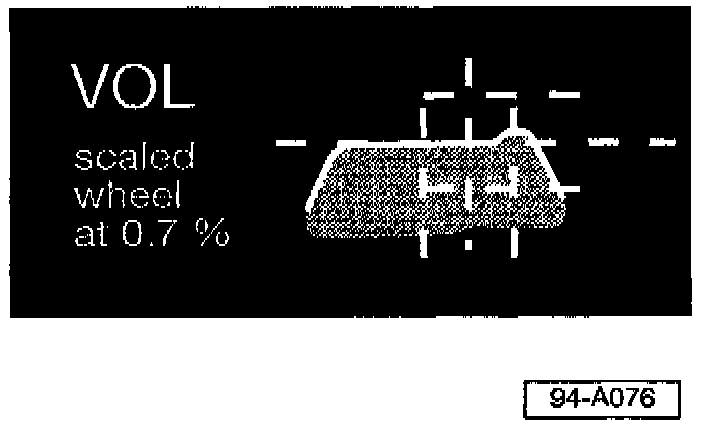

Driver's Side Headlight, Setting Low Beam Alignment
- Move Beamsetter into position in front of the vehicle so it is aligned with the vehicle and Beamsetter box is 30 to 70 cm (12 to 28 in.) from the driver's side headlight.- Switch headlights ON in low beam position.
- Align Beamsetter box so it is centered on the headlight (align vertically then horizontally).
Note:
^ Use the arrows on the Beamsetter box as a guide.
^ You may want to use a straight edge or tape measure, because alignment must be within 3 cm (1.2 in.) of the center of the headlight
- Without moving the Beamsetter, slide Broad-band sight toward center of vehicle (Broad-band sight can also be moved up and down for a better position).
Use Broad-band sight to make final alignment of Beamsetter box to vehicle by:
- Loosening hand-wheel that locks column in place.
- Sighting down through the slit in the Broad-band sight and rotating Beamsetter box and column until two similar points on vehicle are aligned.
Note:
Try using corners of the headlight housings or two screws that are the same height and as far apart as possible on the vehicle.
- Carefully tighten hand wheel without changing Beamsetter position.
- Find correct State or Province Inclination % specification for the low beam adjustment (If there is no local specification, use 0.7%).
Note:
DO NOT use the Inclination % molded into the plastic of the headlight housing near the headlight adjustment screws; it is for Europe only! (Consult Repair Manual 3 Maintenance of appropriate model to determine location of headlight adjuster screws.)
- Set Beamsetter "Scaled wheel" to the proper low beam inclination %.
- Adjust height (vertical) alignment first. Turn headlight height adjuster screw to align the upper edge of the flat portion of the beam with the center horizontal line of the grid on the Beamsefter pattern screen.
Note:
VOL is the correct beam pattern for both right and left headlights.

- Adjust lateral (horizontal) alignment of driver's side headlight so that the peak (highest point) of the headlight beam pattern aligns with the right edge of the target box of the grid on the pattern screen (it should match the VOL pattern shown on the Beamsetter box).
Note:
If the heightalignmentt changed, readjust.